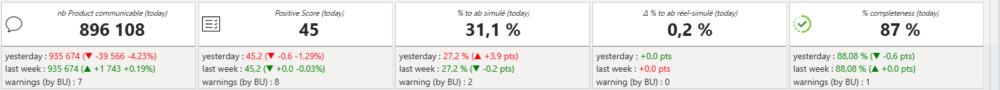

A / 01
RUN & incidents
Qualification, priorisation, escalade, coordination et suivi de résolution dans des environnements applicatifs.
J’aide les équipes à mieux exploiter leurs applications : incidents maîtrisés, supervision plus lisible, données contrôlées et outils opérationnels pensés pour le terrain.
Indicateurs issus d’un suivi opérationnel communiqué ; périmètres et méthodes de calcul à confirmer avant toute utilisation commerciale externe.
Une approche pragmatique : comprendre l’incident, sécuriser le service, rendre le diagnostic reproductible et supprimer les irritants qui reviennent.
Qualification, priorisation, escalade, coordination et suivi de résolution dans des environnements applicatifs.
Lecture des signaux de production, analyse de logs, alerting et amélioration de la visibilité opérationnelle.
Contrôles de cohérence, investigations SQL, analyse des écarts et suivi des traitements data.
Scripts et interfaces légères pour fiabiliser les contrôles, centraliser l’information et simplifier les gestes récurrents.
Études de cas anonymisées à partir de travaux menés en contexte professionnel. Les détails sensibles et les données propriétaires ne sont pas publiés.

Structuration du traitement des demandes, investigations sur la qualité des données, suivi des indicateurs et documentation pour rendre le support plus prévisible.

Automatiser des contrôles récurrents et publier une synthèse lisible dans un canal d’équipe, avec comparaison aux valeurs précédentes.
Lire l’étude de cas ↗
Prototype de cockpit visant à simplifier la lecture des tickets, l’analyse de l’historique, les réponses et la catégorisation du backlog.
Lire l’étude de cas ↗Réflexion et prototype de suivi d’activité avec synthèses, catégorisation évolutive et lecture par personne, produit et période.
Lire l’étude de cas ↗Extraits de captures fournies lors du suivi des projets en octobre 2026. Les interfaces ne sont pas des maquettes fictives : seuls certains cadrages ont été réduits pour éviter de publier des informations individuelles.

Ces captures proviennent d’échanges de travail. Elles doivent être validées vis-à-vis de la confidentialité et des droits de diffusion avant toute mise en ligne publique.
Je privilégie les solutions compréhensibles, documentées et maintenables. L’objectif n’est pas d’ajouter de la complexité, mais d’aider les équipes à décider et agir plus vite.
Contexte, impact, utilisateurs, données disponibles et critères de succès.
Prioriser les risques, coordonner les intervenants et rétablir le service.
Documenter, suivre les indicateurs et transformer les signaux en diagnostic.
Automatiser ce qui se répète, partager la connaissance et mesurer l’effet.
Je sais mobiliser les outils adaptés à l’investigation et au suivi opérationnel, et je continue à renforcer mes compétences techniques au fil des besoins.
Ouvert aux opportunités en Run Management, Incident Management, support applicatif, amélioration continue et automatisation opérationnelle.
Pense à remplacer le lien GitHub générique par ton profil avant publication.